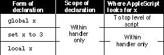

Scope of Variables Declared in a Handler
You can't declare a property in a handler, although you can refer to a
property declared at the top level of the script or script object to which
the handler belongs.Figure 8-3 summarizes the scope of variables declared in a handler. Examples of each form of declaration follow.
Figure 8-3 Scope of variable declarations within a handler

The scope of a global variable declared in a handler is limited to that handler, although AppleScript looks beyond the handler when it tries to locate an earlier occurrence of the same variable. Here's an example.
set theCount to 10 on increment() global theCount set theCount to theCount + 2 end increment increment() --result: 12 theCount --result: 12When AppleScript encounters thetheCountvariable within the on increment handler, it doesn't restrict its search for a previous occurrence
to that handler but keeps looking until it finds the declaration at the top level
of the script. However, references totheCountin any subsequent handler
in the script are local to that handler unless the handler also explicitly declarestheCountas a global variable.The scope of a variable declaration using the Set command within a handler is limited to that handler:
script Henry set theCount to 10 on increment() set theCount to 5 end increment return theCount end script tell Henry to increment() --result: 5 run Henry --result: 10The scope of the first declaration of the firsttheCountvariable, at the top level of the script objectHenry, is limited to the Run handler for the script object. The scope of the secondtheCountdeclaration, within theon incrementhandler, is limited to that handler. AppleScript keeps track of each variable independently.The scope of a local variable declaration in a handler is limited to that handler, even if the same identifier has been declared as a property at a higher level in the script:
property theCount : 10 on increment() local theCount set theCount to 5 end increment increment() --result: 5 theCount --result: 10